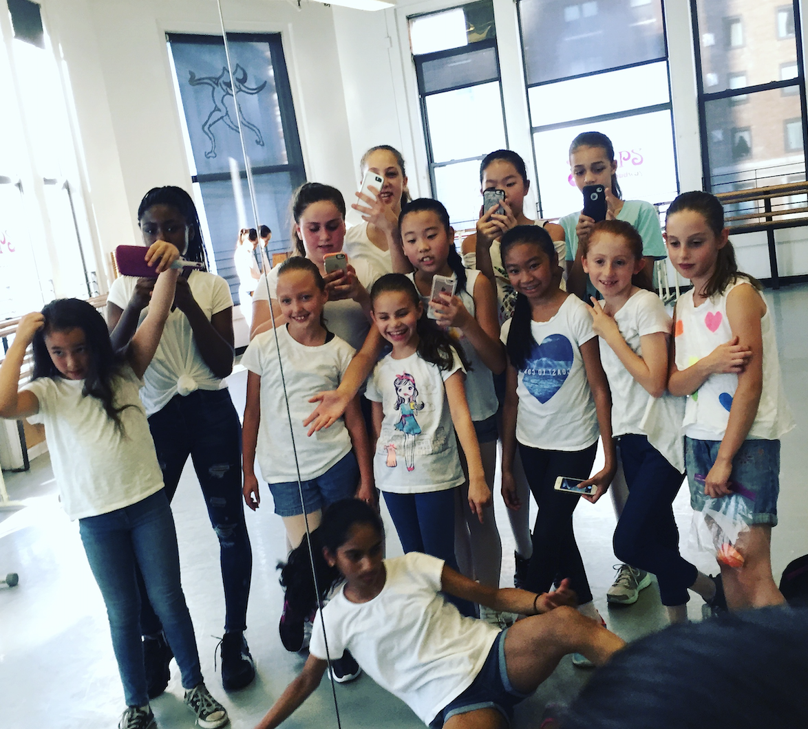
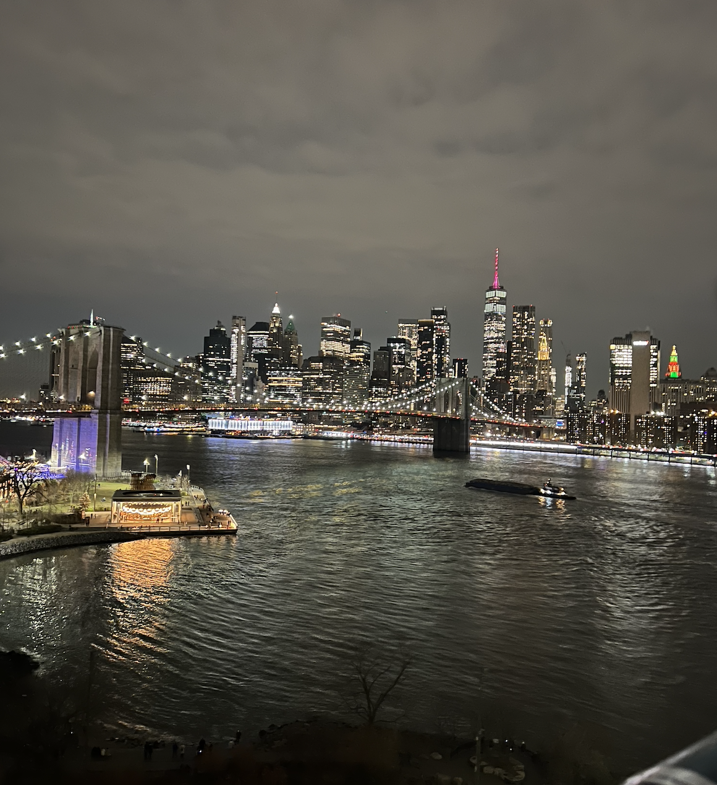
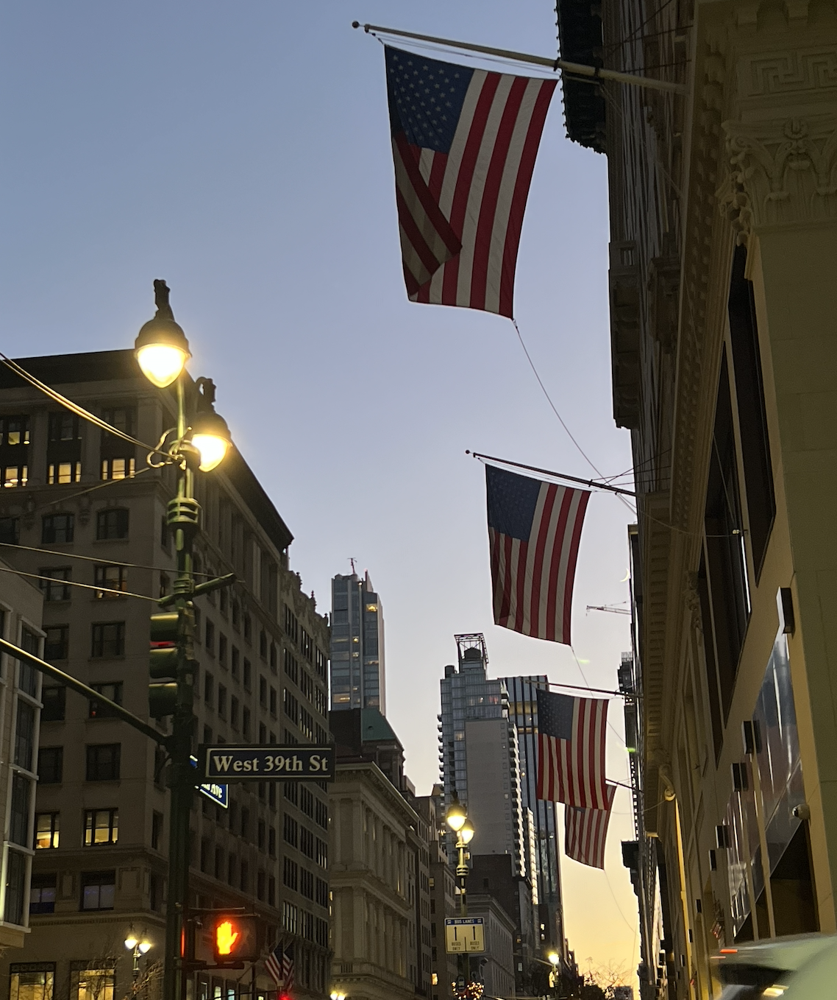

NYC – A Second Home
New York City holds a special place in my heart, as it is where my grandparents live. It's like a second home, and I spent most of my summers with them. During these summer visits, I attended a dance camp called Steps on Broadway. It was an experience that helped shape who I am today. On weekends, we'd take the LIRR to visit my uncle, who lived in Long Island at the time. Those weekends were filled with laughter and family time.
Those trips to NYC were not only fun, but they were also the first time I began to struggle with my identity. It was a confusing and formative time, but it also helped me grow and understand who I truly am. I’ll always have the memories of spending my summers in the city with my grandparents, learning dance, and exploring everything NYC has to offer.
NYC Memories

Steps on Broadway – where I found my passion and built confidence through dance.

The familiar view from my grandma’s apartment - where I’ve watched countless sunsets.

A favorite street shot - capturing the energy and rhythm of the city I’ve grown to love.
The skyline that always reminded me of possibility and wonder.

One of many NYC moments I’ve collected over the years - each photo holding a story.